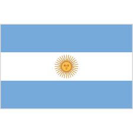
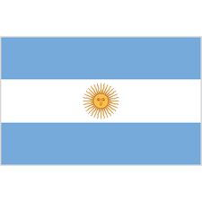

হয়তো আর বিশ্বকাপে ডি-মারিয়াকে দেখতে পাবো না।
সে যে বড় ম্যাচের প্লেয়ার আজকে তার প্রমাণ দিয়েছে
ডি- মারিয়া একটা প্রজম্ম তোমাকে মনে রাখবে আজীবন
।
এবারই শেষ বিশ্বকাপ এ্যাঙ্গেল ডি-মারিয়ার। ফুটবলে অ
সাধারণ নৈপুণ্য ও দক্ষতা দেখিয়েছেন তিনি।
কোয়ার্টার ফা
ইনালে ট্রাইবেকারে নেদারল্যান্ডস কে ৪-৩ গোলে হারিয়ে মে
সির দল এখন সেমিফাইনালে। তাদের প্রতিপক্ষ এখন ক্রোয়ে
শিয়া। গোটা একটা জেনারেশন তাকিয়ে আছে ডি - মারিয়ার
দিকে।শুভ কামনা রইলো ডি-মারিয়া ও আর্জেন্টিনা।
পরবর্তী
বিশ্বকাপে আবারও দেখা হবে।
ফুটবলের রাজা মেসির দিকে তাকিয়ে
বর্তমান গোটা জেনারেশন
হয়তো আর বিশ্বকাপে ফুটবলের রাজা দেখতে পাবো না।
সে যে বড় ম্যাচের প্লেয়ার আজকে তার প্রমাণ দিয়েছে মে
সি একটা প্রজম্ম তোমাকে মনে রাখবে আজীবন।
এবারই
শেষ বিশ্বকাপ লিও মেসির।
কোয়ার্টার ফাইনালে ট্রাইবেকারে
নেদারল্যান্ডস কে ৪-৩ গোলে হারিয়ে মেসির দল এখন সেমিফা
ইনালে। তাদের প্রতিপক্ষ এখন ক্রোয়েশিয়া। গোটা একটা জেনা
রেশন তাকিয়ে আছে মেসির দিকে।শুভ কামনা রইলো মেসি ও
আর্জেন্টিনা।
পরবর্তী বিশ্বকাপে আবারও দেখা হবে।
« Previous
Next »
‹
›
 
